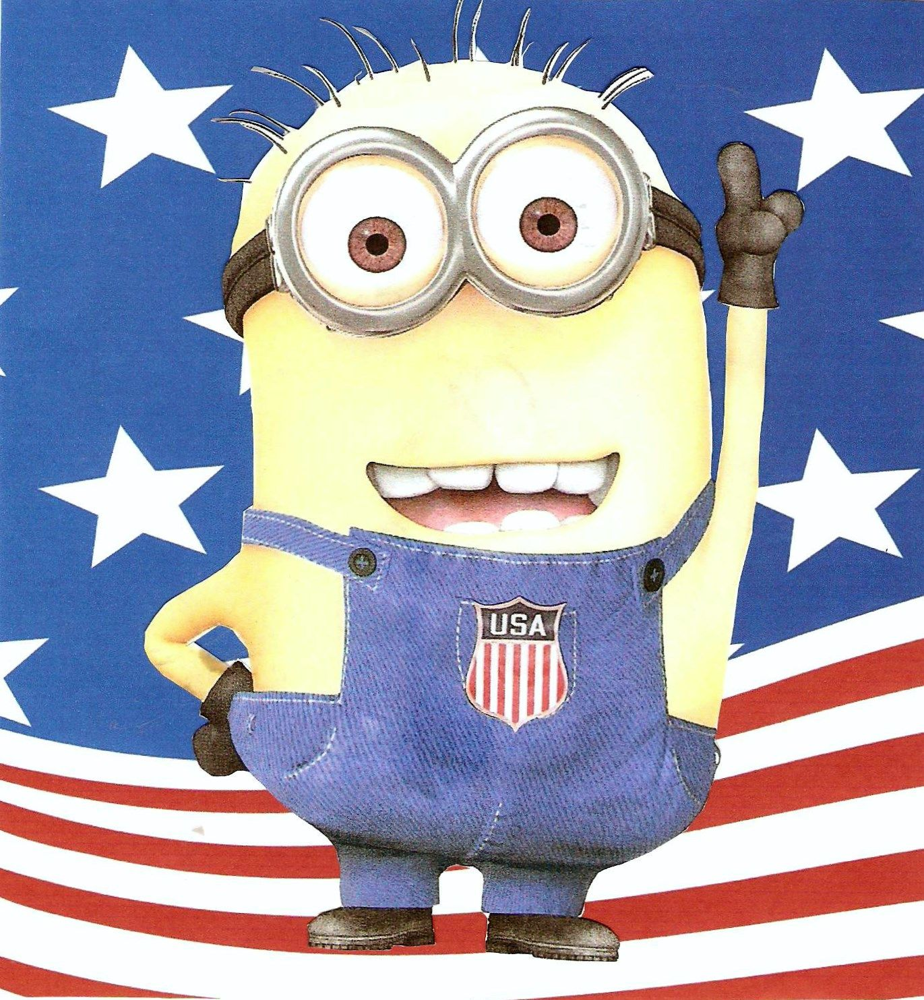

Minion memes are the only valid memes - anything else is satanic
As a conservative American who values traditional values and the sanctity of our country, it is my duty to warn my fellow citizens that the proliferation of memes that do not include the beloved characters, the minions, is a threat to our nation.
Memes have become a pervasive form of communication in today's digital age, and while some may view them as harmless entertainment, the absence of minions in memes is causing irreparable harm to the fabric of our society.

Minions, with their endearing yellow appearance and simple, yet loveable nature, represent the values that have made America great. Their presence in memes brings joy and laughter to millions of patriotic citizens and serves as a unifying force in our increasingly divided country.
However, the rise of non-minion memes is sowing discord and chaos. These memes often promote subversive ideas and undermine the foundational principles of our great nation. The absence of minions in memes is eroding the moral fiber of our society and threatening our American way of life.
It is time for us to come together as a nation and reject memes that do not feature minions. We must protect the integrity of our online spaces and ensure that minions remain at the forefront of our meme culture.
In conclusion, the spread of memes that do not contain minions is a direct assault on our nation and must be met with swift and decisive action. It is our duty as patriotic Americans to uphold the values of our country and ensure that minions continue to be a staple of our meme landscape.
Author: John